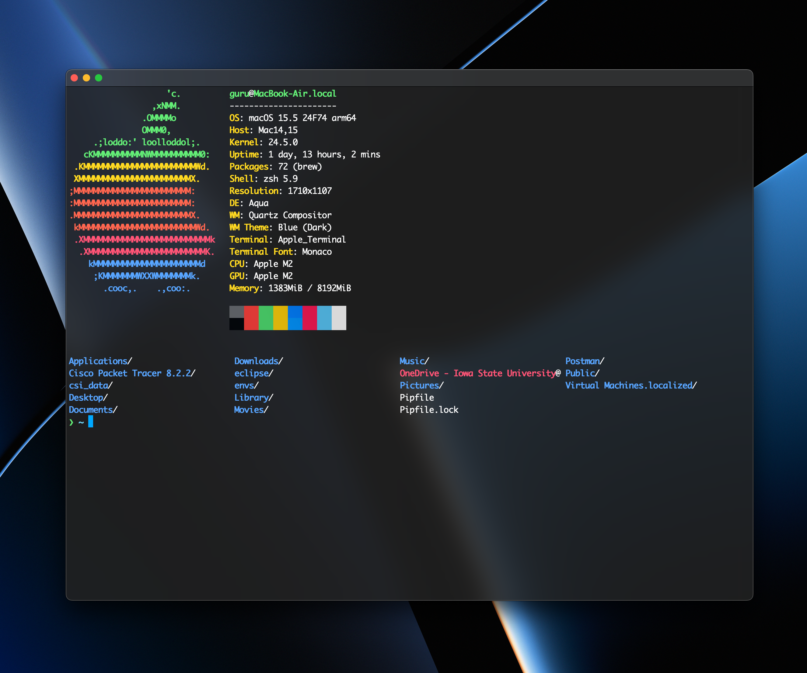
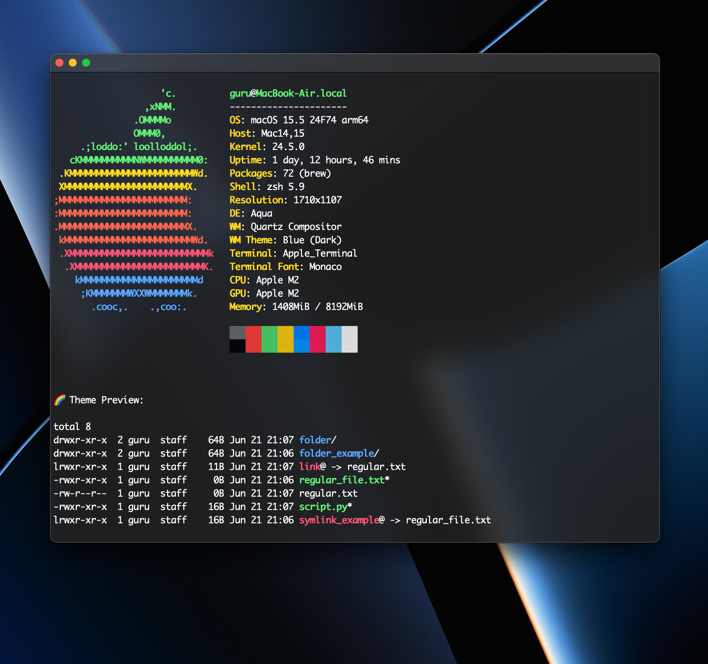
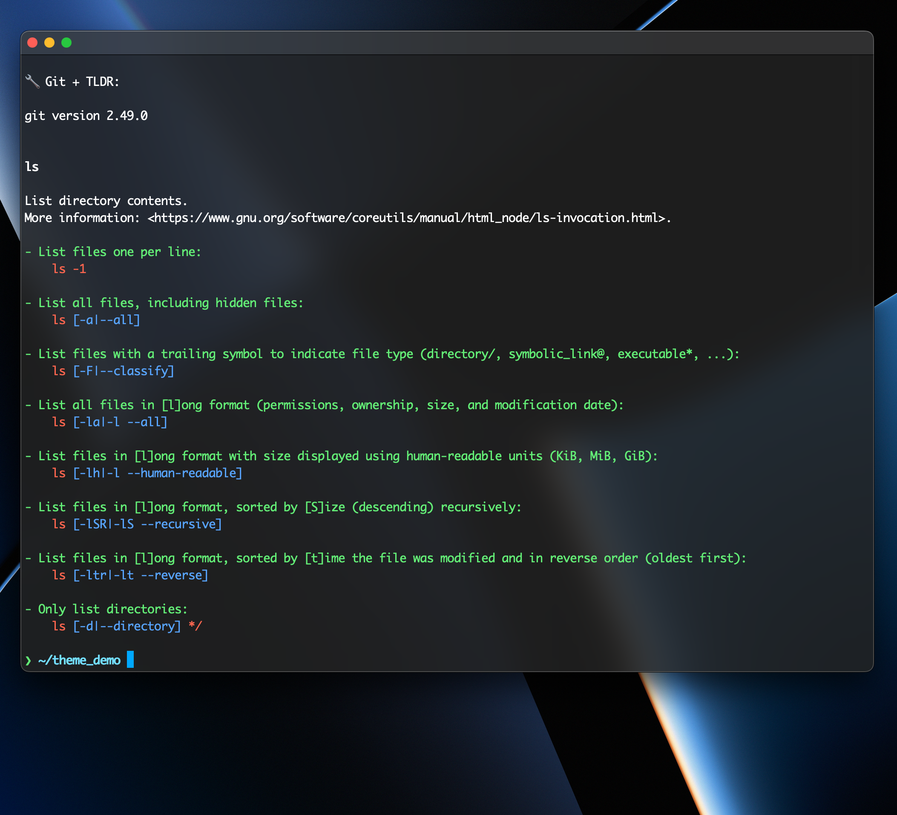

A sleek, semi-transparent MacOS Terminal theme inspired by Hyper's Verminal aesthetic — featuring Monaco font, frosted blur, and a vibrant color palette for daily terminal use.
Download Theme


FrostedGlass.terminal using the button above.This theme is the result of several hours of iterative tweaking to accurately replicate the look and feel of the Verminal theme from Hyper — but natively within the macOS Terminal environment. From color palette precision to font smoothing, every detail was refined to deliver a consistent and polished aesthetic without relying on third-party terminal emulators.
Achieving this involved manual testing of color combinations, cursor styles, and font spacing to get the frosted glass vibe just right. It's not a copy — it's a reimagining tailored for Mac power users who want a lightweight yet visually sharp terminal setup.
.zshrc Configuration
Below is a sample of my ~/.zshrc setup to complement the Frosted Glass theme. It includes helpful
extensions and aliases I use daily.
# Enable directory colors
export CLICOLOR=1
export LSCOLORS=ExFxBxDxCxegedabagacad
# History settings
HISTFILE=~/.zsh_history
HISTSIZE=1000
SAVEHIST=1000
setopt inc_append_history
setopt share_history
# Auto CD
setopt AUTO_CD
# Path
export PATH="/usr/local/bin:$PATH"
# Git prompt setup
autoload -Uz vcs_info
# Forcefully override conflicting formats
zstyle ':vcs_info:*' enable git
zstyle ':vcs_info:git:*' formats '(%b)' # Just branch
zstyle ':vcs_info:git:*' actionformats '(%b)' # Ignore rebase, merge, etc.
zstyle -d ':vcs_info:*:*:*' patch-format
zstyle -d ':vcs_info:*:*:*' set-message
precmd() {
vcs_info
local folder_name="%1~"
if [[ -n $vcs_info_msg_0_ ]]; then
PROMPT="%B%F{green}❯%f%b %B%F{cyan}${folder_name}%f%b %F{yellow}${vcs_info_msg_0_}%f "
else
PROMPT="%B%F{green}❯%f%b %B%F{cyan}${folder_name}%f%b "
fi
}
# Git format: just branch name, prefixed with 'git:'
zstyle ':vcs_info:*' enable git
zstyle ':vcs_info:git:*' formats '(%b)'
# Auto-suggestions (Homebrew)
source /opt/homebrew/share/zsh-autosuggestions/zsh-autosuggestions.zsh
ZSH_AUTOSUGGEST_HIGHLIGHT_STYLE='fg=244'
# Optional: reset formatting after each prompt
function _reset_prompt_colors() { echoti sgr0 }
precmd_functions+=(_reset_prompt_colors)